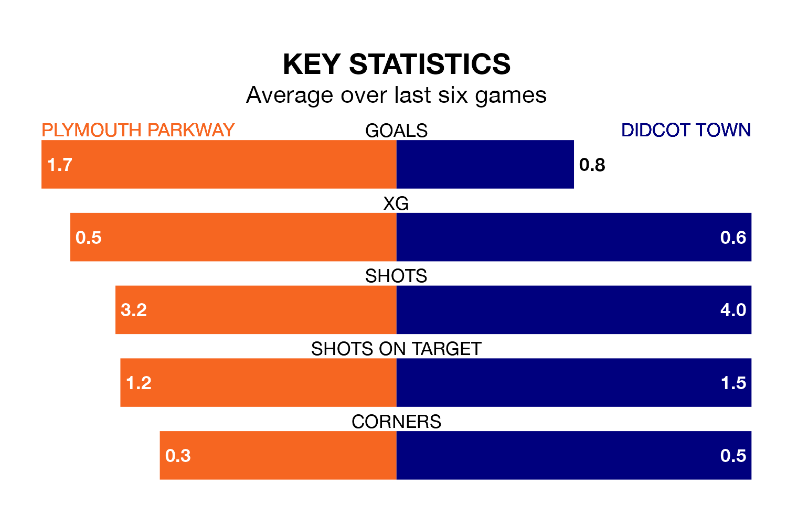

Plymouth Parkway are heavy favourites to keep all three points at home in Wednesday's late kick-off against Didcot Town.
Plymouth Parkway, who sit 16th in Southern League Premier South with 23 games played, are priced at 1.4 to seal victory.
Sitting five places and 13 points behind them in the table, Didcot are 5.8 to win with *Betting Company*, while the draw is at 4.8.
Plymouth Parkway are in mixed form in Southern League Premier South, with two wins and three draws from their last six games.
With two wins and a draw over that period, Didcot's form is slightly worse – they have taken seven points from 18, compared to the home team's nine.
With 28 goals in 27 games so far this season, Town are the league's lowest scorers with 1.0 goals per game. And they are conceding more than average, letting in 63 goals at a rate of 2.3 per game.
Plymouth Parkway, meanwhile, are average scorers, with 1.7 goals per game. They have conceded 1.4 goals per game.
Over the last two years, Plymouth Parkway and Didcot have played each other twice. Plymouth Parkway won one of them and they drew the other.
Their last meeting was on September 6 2022, when Plymouth Parkway won 3-2 at home.
Plymouth Parkway's last match was on January 30, a 1-0 loss against Beaconsfield Town.
Didcot lost 1-0 against Dorchester Town last time out, on Saturday.
Updated: 14:59 (UTC), 05/02/24